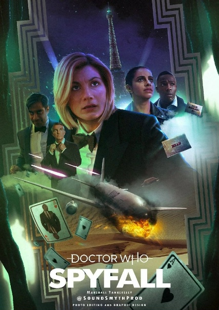
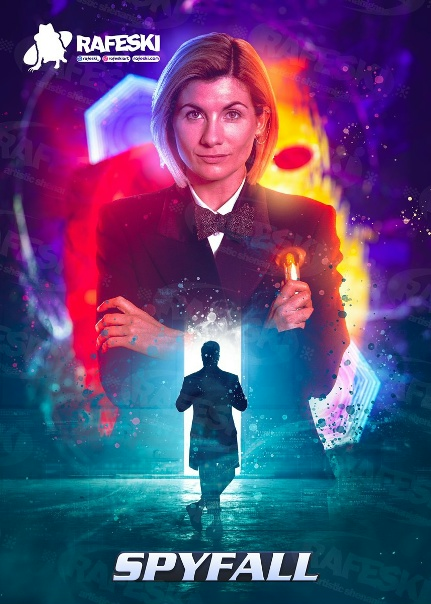
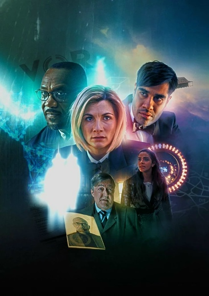

MVO [TVShows], [Кириллица], [Baibako], [Jaskier], [ColdFilm], [IdeaFilm], [WestFilm] или Original [ENG]
Субтитры: Русские {TrueTransLate} или Английские

Весь 12-й сезон (10 серий)
Spyfall
Дата выхода: 1 и 5 января 2020
Формат: два 60-минутных эпизода
| Варианты озвучек: | * Разные: смотрите по инструкции |
|---|---|
| Скачивание и просмотр: |
Инопланетная раса, способная проходить сквозь стены, уничтожает шпионов. Когда безопасность всей планеты под угрозой, глава MI6 вызывает Тринадцатого Доктора и её команду на помощь. Они начинают расследование бывшего агента по имени Дэниэл Бартон, который является основателем известной технической корпорации. Сможет ли помочь давний знакомый Доктора, который, кажется, знает её куда лучше, чем она подозревала…


